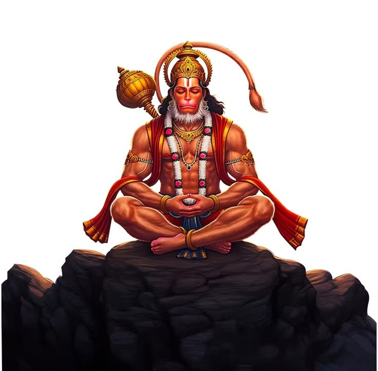
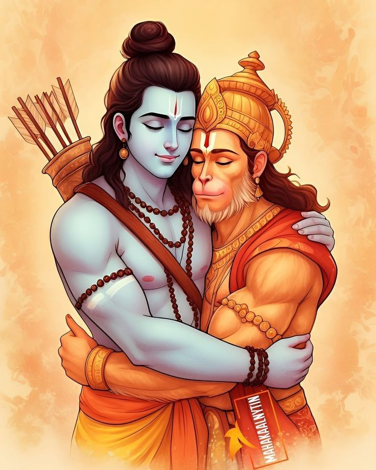

No doubt this is the best and specially my favourite.
One of
the most powerfull music/lyrics.
Give goosebumps if feel from
inside.

श्री गुरु चरण सरोज रज, निज मनु मुकुरु सुधारि,
बरनऊँ रघुवर बिमल
जसु, जो दायकु फल चारि॥
बुद्धिहीन तनु जानिके, सुमिरो पवन कुमार।
बल बुद्धि विद्या देहु मोहिं, हरहु कलेश विकार॥
जय हनुमान ज्ञान गुन सागर।
जय कपीस तिहुं लोक उजागर॥
रामदूत अतुलित बल धामा।
अंजनि पुत्र पवनसुत नामा॥
महाबीर बिक्रम बजरंगी।
कुमति निवार सुमति के संगी॥
कंचन बरन बिराज सुबेसा।
कानन कुंडल कुंचित केसा॥
हाथ बज्र औ ध्वजा बिराजै।
काँधे मूँज जनेऊ साजै॥
शंकर सुवन केसरी नंदन।
तेज प्रताप महा जग वंदन॥
विद्यावान गुनी अति चातुर।
राम काज करिबे को आतुर॥
प्रभु चरित्र सुनिबे को रसिया।
राम लखन सीता मन बसिया॥
सूक्ष्म रूप धरि सियहिं दिखावा।
बिकट रूप धरि लंक जरावा॥
भीम रूप धरि असुर संहारे।
रामचन्द्र के काज संवारे॥
लाय संजीवन लखन जियाये।
श्रीरघुबीर हरषि उर लाये॥
रघुपति कीन्ही बहुत बड़ाई।
तुम मम प्रिय भरतहि सम भाई॥
सहस बदन तुम्हरो जस गावैं।
अस कहि श्रीपति कंठ लगावैं॥
सनकादिक ब्रह्मादि मुनीसा।
नारद सारद सहित अहीसा॥
जम कुबेर दिगपाल जहाँ ते।
कवि कोविद कहि सके कहाँ ते॥
तुम उपकार सुग्रीवहि कीन्हा।
राम मिलाय राजपद दीन्हा॥
तुम्हरो मंत्र बिभीषन माना।
लंकेश्वर भए सब जग जाना॥
जुग सहस्त्र जोजन पर भानू।
लील्यो ताहि मधुर फल जानू॥
प्रभु मुद्रिका मेलि मुख माहीं।
जलधि लांघि गये अचरज नाहीं॥
दुर्गम काज जगत के जेते।
सुगम अनुग्रह तुम्हरे तेते॥
राम दुआरे तुम रखवारे।
होत न आज्ञा बिनु पैसारे॥
सब सुख लहै तुम्हारी सरना।
तुम रक्षक काहू को डर ना॥
आपन तेज सम्हारो आपै।
तीनों लोक हाँक ते काँपै॥
भूत पिशाच निकट नहिं आवै।
महाबीर जब नाम सुनावै॥
नासै रोग हरै सब पीरा।
जपत निरंतर हनुमत बीरा॥
संकट तें हनुमान छुड़ावै।
मन क्रम बचन ध्यान जो लावै॥
सब पर राम तपस्वी राजा।
तिनके काज सकल तुम साजा॥
और मनोरथ जो कोई लावै।
सोइ अमित जीवन फल पावै॥
चारों जुग परताप तुम्हारा।
है परसिद्ध जगत उजियारा॥
साधु संत के तुम रखवारे।
असुर निकंदन राम दुलारे॥
अष्ट सिद्धि नौ निधि के दाता।
अस बर दीन जानकी माता॥
राम रसायन तुम्हरे पासा।
सदा रहो रघुपति के दासा॥
तुम्हरे भजन राम को पावै।
जनम जनम के दुख बिसरावै॥
अन्त काल रघुबर पुर जाई।
जहाँ जन्म हरि-भक्त कहाई॥
और देवता चित्त न धरई।
हनुमत सेइ सर्ब सुख करई॥
संकट कटै मिटै सब पीरा।
जो सुमिरै हनुमत बलबीरा॥
जय जय जय हनुमान गोसाईं।
कृपा करहु गुरुदेव की नाईं॥
जो सत बार पाठ कर कोई।
छूटहि बंदि महा सुख होई॥
जो यह पढ़ै हनुमान चालीसा।
होय सिद्धि साखी गौरीसा॥
तुलसीदास सदा हरि चेरा।
कीजै नाथ हृदय महँ डेरा॥
पवनतनय संकट हरन, मंगल मूरति रूप।
राम लखन सीता सहित, हृदय बसहु सुर भूप॥
Banrang Baan is very peaceful,
Such a nice song.
The one
who really believe in hanuman ji
can feel this.
Each line touches the inner soul.

निश्चय प्रेम प्रतीत ते, विनय करें सनमान ।
तेहि के कारज सकल शुभ, सिद्घ करैं हनुमान ।।
जय हनुमन्त सन्त हितकारी ।
सुन लीजै प्रभु अरज हमारी ।।
जन के काज विलम्ब न कीजै ।
आतुर दौरि महा सुख दीजै ।।
जैसे कूदि सुन्धु वहि पारा ।
सुरसा बद पैठि विस्तारा ।।
आगे जाई लंकिनी रोका ।
मारेहु लात गई सुर लोका ।।
जाय विभीषण को सुख दीन्हा ।
सीता निरखि परम पद लीन्हा ।।
जाय विभीषण को सुख दीन्हा ।
सीता निरखि परम पद लीन्हा ।।
बाग उजारी सिन्धु महं बोरा ।
अति आतुर जमकातर तोरा ।।
अक्षय कुमार मारि संहारा ।
लूम लपेट लंक को जारा ।।
लाह समान लंक जरि गई ।
जय जय धुनि सुरपुर मे भई ।।
अब विलम्ब केहि कारण स्वामी ।
कृपा करहु उन अन्तर्यामी ।।
जय जय लक्ष्मण प्राण के दाता ।
आतुर होय दुख हरहु निपाता ।।
जै गिरिधर जै जै सुखसागर ।
सुर समूह समरथ भटनागर ।।
जय हनु हनु हनुमंत हठीले ।
बैरिहि मारु बज्र की कीले ।।
गदा बज्र लै बैरिहिं मारो ।
महाराज प्रभु दास उबारो ।।
ऊँ कार हुंकार महाप्रभु धावो ।
बज्र गदा हनु विलम्ब न लावो ।।
ऊँ हीं हीं हनुमन्त कपीसा ।
ऊँ हुं हुं हनु अरि उर शीशा ।।
सत्य होहु हरि शपथ पाय के ।
रामदूत धरु मारु जाय के ।।
जय जय जय हनुमन्त अगाधा ।
दुःख पावत जन केहि अपराधा ।।
पूजा जप तप नेम अचारा ।
नहिं जानत हौं दास तुम्हारा ।।
वन उपवन, मग गिरि गृह माहीं ।
तुम्हरे बल हम डरपत नाहीं ।।
पांय परों कर जोरि मनावौं ।
यहि अवसर अब केहि गोहरावौं ।।
जय अंजनि कुमार बलवन्ता ।
शंकर सुवन वीर हनुमन्ता ।।
बदन कराल काल कुल घालक ।
राम सहाय सदा प्रति पालक ।।
भूत प्रेत पिशाच निशाचर ।
अग्नि बेताल काल मारी मर ।।
इन्हें मारु तोहिं शपथ राम की ।
राखु नाथ मरजाद नाम की ।।
जनकसुता हरि दास कहावौ ।
ताकी शपथ विलम्ब न लावो ।।
जय जय जय धुनि होत अकाशा ।
सुमिरत होत दुसह दुःख नाशा ।।
चरण शरण कर जोरि मनावौ ।
यहि अवसर अब केहि गौहरावौं ।।
उठु उठु उठु चलु राम दुहाई ।
पांय परों कर जोरि मनाई ।।
ऊं चं चं चं चपल चलंता ।
ऊँ हनु हनु हनु हनु हनुमन्ता ।।
ऊँ हं हं हांक देत कपि चंचल ।
ऊँ सं सं सहमि पराने खल दल ।।
अपने जन को तुरत उबारो ।
सुमिरत होय आनन्द हमारो ।।
यह बजरंग बाण जेहि मारै ।
ताहि कहो फिर कौन उबारै ।।
पाठ करै बजरंग बाण की ।
हनुमत रक्षा करैं प्राम की ।।
यह बजरंग बाण जो जापै ।
ताते भूत प्रेत सब कांपै ।।
धूप देय अरु जपै हमेशा ।
ताके तन नहिं रहै कलेशा ।।
प्रेम प्रतीतहि कपि भजै, सदा धरैं उर ध्यान ।
तेहि के कारज सकल शुभ, सिद्घ करैं हनुमान ।।
Jai Shree Ram